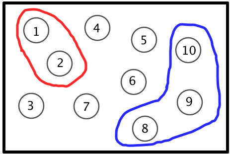
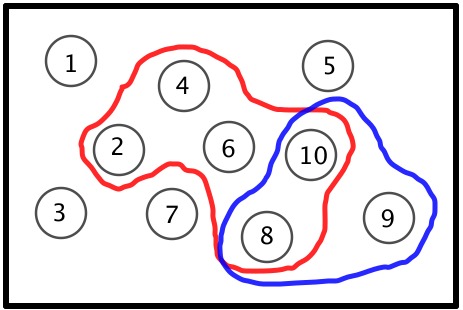
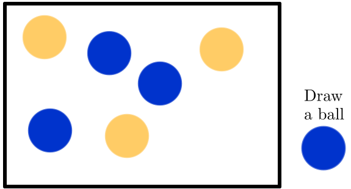
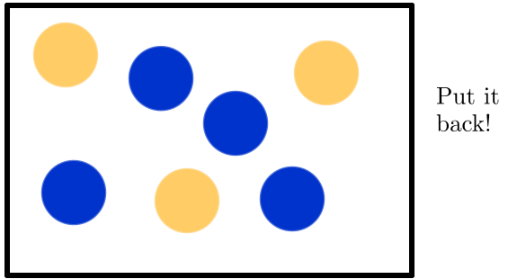
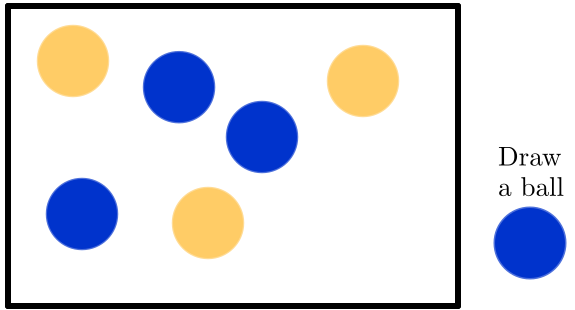
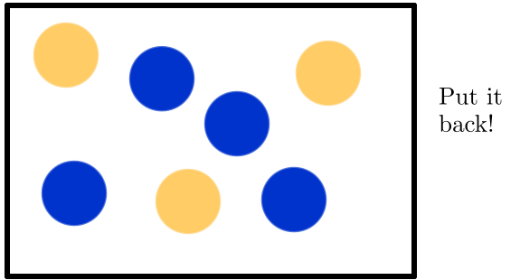
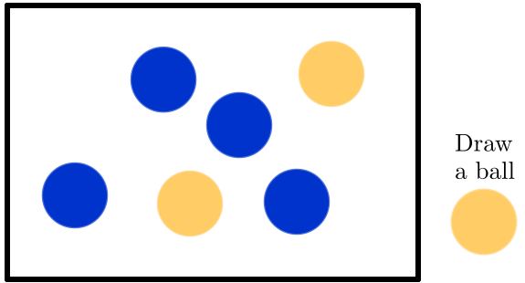
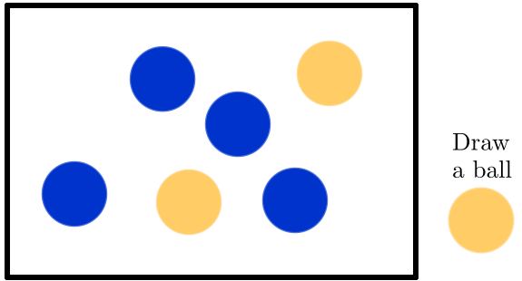
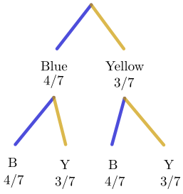
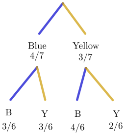

Linear Algebra
&
Engineering Mathematics 1
Week 8 - Probability I
Introduction to probability
- Probability measures how likely an event is to occur.
- It helps us predict outcomes in uncertain situations.
 |
We are going to use well-established mathematical theory
Introduction to probability
- Probability measures how likely an event is to occur.
- It helps us predict outcomes in uncertain situations.
|
- Two main types:
- Theoretical Probability
- Experimental Probability
Experimental probability
Experimental probability
Source: Digital First
Experimental probability
- Based on actual experiments or observations. 🔎 👀
- Depends on the data collected. 📈📊
- Formula: \[ \text{Experimental Probability} = \frac{\text{Number of times en event occurs}}{\text{Total number of trials}} \]
- As in the example of tossing a coin 🪙:
If I toss a coin 100 times, and I get 55 Heads, then the probability of heads is approximately \[ \frac{55}{100}\approx 0.55. \]
Experimental probability
In general: if a coin is tossed $N$ times, \[ P(\text{Head}) = \frac{\text{Number of Heads}}{N}. \]
As $N$ gets larger, then the experimental probability gets closer to what we call theoretical probability.
In other words,
Theoretical probability
- Based on reasoning or mathematical analysis.
- Assumes all outcomes are equally likely.
- Formula: \[ \text{Theoretical Probability} = \frac{\text{Number favorable outcomes}}{\text{Total number of possible outcomes}} \]
- Tossing a coin → Probability of getting Heads \(= \dfrac{1}{2}.\)
Events
- An event is a specific outcome or a set of outcomes.
Examples:
- Tossing a 🪙 coin: event = "getting a tail"
- Throwing a 🎲 die: event = "rolling a 4" or "rolling an even number"
- Simple Event:
One outcome (e.g., 🎲 rolling a 6)
- Compound Event:
Multiple outcomes (e.g., 🎲 rolling an odd number: 1, 3, or 5)
Events
⚀ ⚁ ⚂ ⚃ ⚄ ⚅
Consider the event: Trowing a die 🎲.
All the possible outcomes are: \(1, 2, 3,4, 5, 6\)
We count the occurrence of each event over a very large number of tests $N$ to get $$N_1, N_2, N_3, N_4, N_5, N_6$$ for the events.
Since there are the only possible events, we must have
\(N_1+ N_2+ N_3+ N_4+ N_5+ N_6 = N.\)
Events
⚀ ⚁ ⚂ ⚃ ⚄ ⚅
Consider the event: Trowing a die 🎲.
All the possible outcomes are: \(1, 2, 3,4, 5, 6\)
Since there are the only possible events, we must have
\(N_1+ N_2+ N_3+ N_4+ N_5+ N_6 = N.\)
The probability of the event $i$ is then
\(P(i) = \dfrac{N_i}{N}\) for $N\ra \infty.$
Events
Consider the event: Trowing a die 🎲.
All the possible outcomes are: \(1, 2, 3,4, 5, 6\)
Since there are the only possible events, we must have
\(N_1+ N_2+ N_3+ N_4+ N_5+ N_6 = N.\)
Now, let's divide by $N$ the previous expression, so we obtain:
\(\dfrac{N_1+ N_2+ N_3+ N_4+ N_5+ N_6 }{N}= \dfrac{N}{N}\)
\(\Ra \dfrac{N_1}{N}+ \dfrac{N_2}{N}+ \dfrac{N_3}{N}+ \dfrac{N_4}{N}+ \dfrac{N_5}{N}+ \dfrac{N_6}{N}= 1\)
Events
Consider the event: Trowing a die 🎲.
All the possible outcomes are: \(1, 2, 3,4, 5, 6\)
\(\Ra \dfrac{N_1}{N}+ \dfrac{N_2}{N}+ \dfrac{N_3}{N}+ \dfrac{N_4}{N}+ \dfrac{N_5}{N}+ \dfrac{N_6}{N}= 1\)
\(\Ra P(1) + P(2) + P(3) + P(4)+ P(5)+P(6)= 1\)
For a "fair" die we have that \(P(1)=P(2)=P(3)=P(4)=P(5)=P(6).\)
\(\Ra\,6 P(1)=\) \(P(1) + P(2) + P(3) + P(4)+ P(5)+P(6)\) \(=1\)
\(\Ra P(1)=P(2)=P(3)=P(4)=P(5)=P(6) = \dfrac{1}{6}.\)
Key concepts
The probability of $A$ occurring is given by the formula \[ P(A) = \frac{\text{Number favorable outcomes}}{\text{Total number of possible outcomes}}. \]
$P(A)$ is a real number between 0 and 1. That is, \[ 0\leq P(A) \leq 1. \]
If the different outcomes of an experiment are $N_1, N_2, N_3, \ldots, N_n,$ then \[ P(N_1)+P(N_2)+P(N_3)+\cdots+P(N_n)=1. \]
Counting methods & Sample space
- The sample space is the set of all possible outcomes of an experiment.
Examples:
-
🪙 Sample space of one coin is \(\{\text{H,T}\}\)
- Sample space of two coins is \( \{\text{HH,HT,TH,TT}\} \)
- Three coins: ???
- 🎲 Trowing a die: Samples space is \(\{1,2,3,4,5,6\}\)
-
🃏 Suits in a pack of cards:
\(\{\)♥️hearts, ♦️diamonds, ♠️spades, ♣️clubs\(\}\)
Counting methods & Sample space
The probability of an event is the number of cases of that event in the sample space divided by the size of the sample space
For example: Consider the sample space for three coins
- \[ \{\text{HHH, HHT, HTH, HTT, THH, THT, TTH, TTT}\} \]
What is the probability of getting 2 heads in 3 tosses?
\(P(\text{exactly 2 heads in 3 tosses})\) \(=\dfrac{\# 2\text{ heads}}{\# \text{Total}}\)
\(=\dfrac{\#\{\text{THH, HTH, HHT}\}}{8}\) \(=\dfrac{3}{8}\)
Checkpoint: Tree diagram for 4 coins
\[ \left\{\text{HHHH, HHHT, HHTH, HHTT, HTHH, HTHT, HTTH, HTTT}\right.\\ \left.\;\; \text{THHH, THHT, THTH, THTT, TTHH, TTHT, TTTH, TTTT}\right\} \]
Sample space using grids
Experiment: Rolling two dice 🎲🎲.
| 1 | 2 | 3 | 4 | 5 | 6 | |
| 1 | ||||||
| 2 | ||||||
| 3 | ||||||
| 4 | ||||||
| 5 | ||||||
| 5 |
Sample space using grids
Experiment: Rolling two dice 🎲🎲.
☝️ Sample space Total # of outcomes = 36 |
Get a double:
+Getting a total of 7:
Getting a 6 on one die only:
+Getting a total of 10 or more:
|
Sample space using grids
Experiment: Rolling two dice 🎲🎲.
☝️ Sample space Total # of outcomes = 36 |
What is the probability of getting a 2 on one die only? 📝
\(A\) = get a 2 on one die only
\(P(A)\) \(=\dfrac{10}{36}\) \(=\dfrac{5}{18}\) |
What kind of events can we have?
- Mutually exclusive or distinct events
- Complementary events
- Independent events
- Related events

Mutually exclusive events
- Mutually exclusive events have no outcomes in common.
Example: There are 10 balls, numbered 1, 2, 3,...,10. One ball is drawn and the number noted. What is the probability that the number is less than 3 or greater than 7?
Mutually exclusive events
Example: [...] What is the probability that the number is less than 3 or greater than 7?
|  |
A = event of getting a number \(\lt\) 3 (i.e., 1 or 2). B = event of getting a number \(\gt\) 7 (i.e., 8, 9, or 10). A and B are mutually exclusive! 👈 \(P(A \text{ or } B)\) \(= P(A) + P(B)\) \(\qquad\quad= P(1 \text{ or } 2) \) \(+\; P(8 \text{ or } 7 \text{ or } 9)\) \(\qquad\quad= P(1) + P(2) \) \(+ \;P(8 )+ P(7) + P(9)\) \(\qquad\quad= \dfrac{1}{10} + \dfrac{1}{10}+\dfrac{1}{10}+ \dfrac{1}{10} + \dfrac{1}{10}\) \(\qquad\quad= \dfrac{5}{10}= \dfrac{1}{2}\) |
Mutually exclusive events
🤔 What happens if A and B are not mutually exclusive or distinct?
Example: There are 10 balls as above. One ball is drawn and the number noted. What is the probability that the number is greater than 7 or even?
Mutually exclusive events
🤔 What happens if A and B are not mutually exclusive or distinct?
Example: [..] What is the probability that the number is greater than 7 or even?
|  |
A = getting a number \(\gt\) 7 (i.e. 8, 9, 10). B = getting an even number (i.e., 2, 4, 6, 8, or 10). A and B are NOT mutually exclusive! 👈 \(P(A \text{ or } B)\) \(= P(A) + P(B) - P(A \text{ and } B)\) \(\qquad\quad= P(> 7) \) \(+\; P(\text{even} )\) \(-\; P(>7 \text{ and }\text{even} )\) \(\qquad\quad= \dfrac{5}{10}\) \(+ \; \dfrac{3}{10}\) \(- \;\dfrac{2}{10}\) \(= \dfrac{6}{10}= \dfrac{3}{5}\) |
Complementary events
- Two events are complementary when they are mutually exclusive (they cannot both happen at the same time) and together cover all possible outcomes of an experiment.
- If event A occurs, then its complement (denoted as $A'$ or not $A$) does not occur —and vice versa.
- If $A$ and $A'$ are complementary events then
\(P\left(A\right) + P\left(A' \right) = 1\)
Complementary events
- If $A$ and $A'$ are complementary events then
\(P\left(A\right) + P\left(A' \right) = 1\) \(\Ra \; P\left(A\right)= 1- P\left(A' \right) \)
Complementary events
Example: Rolling a die 🎲
- If $A$ is the event of getting even numbers, then $A'$ (the complement of $A$) is the event of getting odd numbers.
Example: Suppose you randomly select a card from a standard deck of 52 playing cards.
- Let event $B$ be the event of drawing a RED card (❤️ hearts or ♦️ diamonds). Then event $B'$ (the complement of $B$) is drawing a BLACK card (♠️ spades or ♣️ clubs).
Check point: Complementary events
For each example, compute the probabilities of each event and verify:
\(P\left(A\right) + P\left(A' \right) = 1.\)
Example: Rolling a die 🎲
- If $A$ is the event of getting even numbers, then $A'$ (the complement of $A$) is the event of getting odd numbers.
Example: Suppose you randomly select a card from a standard deck of 52 playing cards.
- Let event $B$ be the event of drawing a RED card (❤️ hearts or ♦️ diamonds). Then event $B'$ (the complement of $B$) is drawing a BLACK card (♠️ spades or ♣️ clubs).
Independent & Not Independent events
- Two events are independent if the chance of one occurring is not altered by the outcome of the other.
\(P(A \text{ and } B) = P(A) \times P(B)\)
Example: Consider a box containing 3 yellow balls and 4 blue balls. What is the probability of drawing 2 blue balls
- if the first ball is returned,
- if the first ball is not returned?
Independent & Not Independent events
Example: Consider a box containing 3 yellow balls and 4 blue balls. What is the probability of drawing 2 blue balls
- if the first ball is returned,
- if the first ball is not returned?
 



 

Independent & Not Independent events
👉 1. If the first ball is returned.
What is the probability that the first ball is blue? \(\;\Ra P(A)=\dfrac{4}{7}\)
Then, I put it back. Now, what is the probability that the second ball is blue? \(\;\Ra P(B)=\dfrac{4}{7}\)
|
|
These are independent events! 👈
\(P(\text{blue-1st } \textbf{and} \text{ blue-2nd})\) |
Independent & Not Independent events
👉 2. If the first ball is NOT returned!
What is the probability that the first ball is blue? \(\;\Ra P(A)=\dfrac{4}{7}\)
Then, we keep it out. Now, what is the probability that the second ball is blue? \(\;\Ra P(B)=\dfrac{3}{6}\)
|
|
These are NOT independent events! 👈
\(P(\text{blue-1st } \textbf{and} \text{ blue-2nd})\) |
Comparing probabilities
| Independent | Not Independent |
|---|---|
|

|

|
| Probabilities don't change! | Probabilities change! |
Conditional probability
Consider $A$ and $B$ two events that are NOT independent. The conditional probability
$P(B|A)$ $= \dfrac{\text{# of favorable outcomes}}{\text{total # of outcomes}}$ $= \dfrac{P(A \text{ and } B)}{P(A)}$
is defined as the probability that event $B$ occur given that event $A$ has occurred.
Conditional probability: Key formulas
Given that $A$ occurs, the conditional probability that $B$ occurs is:
\(P(B|A) = \dfrac{P(A \text{ and }B)}{P(A)}\) \(\;\Ra P(A \text{ and }B) = P(B|A) \times P(A)\)
Given that $B$ occurs, the conditional probability that $A$ occurs is:
\(P(A|B) = \dfrac{P(A \text{ and }B)}{P(B)}\) \(\;\Ra P(A \text{ and }B) = P(A|B) \times P(B)\)
👀📝
Checkpoint: Conditional probability
Problem: A box contains 10 red socks, 8 yellow socks and 12 green socks. A girl wants a pair of red socks. If she selects 2 socks at random, what is the probability that both socks are red?
Note: The probability of the second sock being red depends on what colour the first sock was.
👉 This means that we have NOT independent events.
1. Probability of first sock is RED: \(\;P(R_1) = \dfrac{10}{30}\)
2. Probability of second sock is RED: \(\;P(R_2|R_1) = \dfrac{9}{29}\)
\(\Ra \;P(R_1 \text{ and } R_2)\) \(= P(R_1) \times P(R_2|R_1)\) \(= \dfrac{10}{30} \times \dfrac{9}{29}\) \(= \dfrac{3}{29}.\)
Checkpoint: Conditional probability
Problem: A box contains 10 red socks, 8 yellow socks and 12 green socks. A girl wants a pair of red socks. If she selects 2 socks at random, what is the probability that both socks are red?
Challenge! What is the probability that the second sock is RED, if we do not know the colour of the firs sock?
Key challenging concepts
- Independent and Not Independent events
- Conditional probabilities

Monty Hall Game
Combinatorics
- Combinatorics is the mathematics of counting
- We already made list of events to compute probabilities
🎲 | ♥️♠️♣️♦️ | 🧦 | 🔵 🟡
- But lists can get extremely long! 😬
- With combinatorics we can answer questions like:
- How many ways can I arrange the numbers 1,2,3?
- How many ways can I choose 2 objects from 5 if I don't care about order?
- How many 4-digit PIN codes can be made using the digits 0–9?
Combinatorics
Simple words with repetition:
Consider the number of ways we can make a nonsense word of 3 letters.
- First letter: we can choose out of 26 letters of the alphabet.
- Second letter: we can choose out of 26 letters of the alphabet.
- Third letter: we can choose out of 26 letters of the alphabet.
Thus, there are $(26)(26)(26)$ $=26^3 $ $=17576 $ possible words.
Combinatorics
Simple words with restrictions:
Now consider how we make (nonsense) three letter words with
- one vowel (we include "y" for our present purposes); and
- two consonants.
First, we have 20 consonants and 6 vowels.
Second, we can put the vowel in the first, second, or third spot which are mutually exclusive.
- Thus we can choose from $(6)(20)(20)$ or $(20)(6)(20) $ or $(20)(20)(6)$ combinations.
- So we have $(3)(6)(20)(20)$ possibilities = 7200 possible words.
Combinatorics
Simple words with restrictions:
Now consider how we make (nonsense) three letter words with
- one vowel (we include "y" for our present purposes); and
- two consonants.
👉 Solution: 7200 possible words.
Challenge: What is the probability that a three letter word contains exactly one vowel and two consonants?
Permutations
- A permutation is an arrangement of a set of objects, that is, permutations are the different ways a set of objects can be arranged.
- How many ways can you arrange $n$ different things?
1st item can be chosen in $n$ ways,
2nd item can be chosen in $(n-1)$ ways,
3rd item can be chosen in $(n-2)$ ways,
$\vdots$
$(n-1)$-th item can be chosen in $2$ ways,
$n$-th item can be chosen in only $1$ way.
$n!=$ $n \times (n-1)\times (n-2)\times (n-3)\times\cdots \times2 \times 1$
Permutations
- A permutation is an arrangement of a set of objects, that is, permutations are the different ways a set of objects can be arranged.
- How many ways can you arrange $n$ different things?
$n!=$ $n \times (n-1)\times (n-2)\times (n-3)\times\cdots \times2 \times 1$
is called Factorial
- However there are many situations when we are only selecting $r$ things from $n.$ How many different ways can $r$ things be selected from $n$ different things?
Permutations
- However there are many situations when we are only selecting $r$ things from $n.$ How many different ways can $r$ things be selected from $n$ different things?
1st item can be chosen in $n$ ways,
2nd item can be chosen in $(n-1)$ ways,
3rd item can be chosen in $(n-2)$ ways,
$\vdots$
$r$-th item can be chosen in $[n-(r-1)]$ ways,
that is, $r$-th can be chosen $(n-r+1)$ ways.
$ ^{n}P_{r}=$ $n \times (n-1)\times (n-2)\times (n-3)\times\cdots \times(n-r+1)$
Permutations
- However there are many situations when we are only selecting $r$ things from $n.$ How many different ways can $r$ things be selected from $n$ different things?
$ ^{n}P_{r}=$ $n \times (n-1)\times (n-2)\times (n-3)\times\cdots \times(n-r+1)$
👆
This is the formula to calculate permutations!
\( ^{n}P_{r}= \dfrac{n!}{(n-r)!} \)
Combinations
- What if the order in which things are chosen does not matter?
Example: Suppose there is a jar which contains seven different coloured jelly beans - red, white, green, yellow, purple, black and orange. In how many ways can a child select three jelly beans from the jar?
That is, in how many ways can we select 3 things from 7 things where the order does not matter.
For instance, we can have the following outcomes:
RGB RBG GBR GRB BGR BRG
are all the same!
Combinations
Example: Suppose there is a jar which contains seven different coloured jelly beans - red, white, green, yellow, purple, black and orange. In how many ways can a child select three jelly beans from the jar?
Here we are looking for the number of combinations of choosing 3 things from 7!
\(=\dfrac{\text{# of permutations of choosing 3 things from 7}}{\text{# of permutations of 3 things}}\) \(=\dfrac{^{7}P_3}{3!}\)
\(=\dfrac{\dfrac{7!}{(7-3)!}}{3!}\) \(=\dfrac{7!}{(7-3)!3!}\) \(=\dfrac{7\times 6\times5\times4\times3\times2\times1 }{(4\times3\times2\times1)(3\times2\times1)}\) \(=7\times 5 = 35.\)
Combinations
The number of combinations (also called binomial coefficient) for choosing $r$ objects from a set of $n$ distinct objects is given by: \[ \large ^nC_r = \frac{n!}{(n-r)!n!} \]
Checkpoint: Combinatorics
- If I have 10 differently numbered balls in a box. How many ways can I draw 4 balls from the box ?
- In how many ways can a group consisting of 3 women and 5 men be selected from6 women and 8 men?